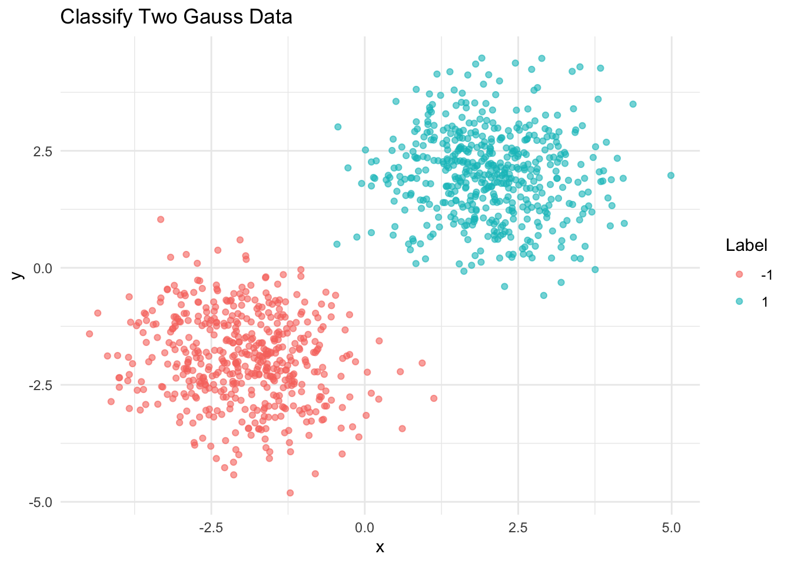
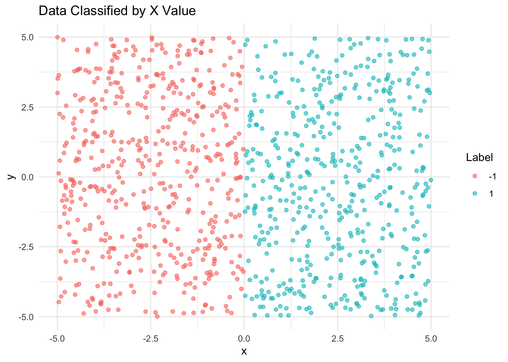

library(tidyverse)
library(neuralnet)
library(ggplot2)
library(dplyr)Project 2 Proposal: Clasifying generated data using Neural Networks in R
Proposal
Goal
Our project aims to develop a neural network model capable of predicting and classifying our own generated data sets, utilizing the neuralnet and keras packages in R, in service of introducing the concept of neural networks to the class and exploring how neural networks can be trained in R, specifically in the context of computer vision and data set classification.
Dataset
genGauss <- function(cx, cy, num_samples, variance, label) {
x <- rnorm(num_samples, mean = cx, sd = sqrt(variance))
y <- rnorm(num_samples, mean = cy, sd = sqrt(variance))
data.frame(x = x, y = y, label = label)
}
#generates two clusters of data points
classifyTwoGaussData <- function(num_samples, noise) {
variance_scale <- function(noise) {
(1 - noise) * 0.5 + noise * 4
}
variance <- variance_scale(noise)
points1 <- genGauss(2, 2, num_samples / 2, variance, 1)
points2 <- genGauss(-2, -2, num_samples / 2, variance, -1)
# Combine datasets
points <- rbind(points1, points2)
return(points)
}
set.seed(123)
data_two <- classifyTwoGaussData(1000, 0.1)
# show data
ggplot(data_two, aes(x = x, y = y, color = factor(label))) +
geom_point(alpha = 0.6) +
labs(title = "Classify Two Gauss Data", color = "Label") +
theme_minimal()
generateDataByX <- function(num_samples) {
x <- runif(num_samples, min = -5, max = 5)
y <- runif(num_samples, min = -5, max = 5)
label <- ifelse(x >= 0, 1, -1)
data <- data.frame(x = x, y = y, label = label)
return(data)
}
set.seed(123)
data_by_x <- generateDataByX(1000)
#plot
ggplot(data_by_x, aes(x = x, y = y, color = factor(label))) +
geom_point(alpha = 0.6) +
labs(title = "Data Classified by X Value", color = "Label") +
theme_minimal()
To illustrate the power and flexibility of neural networks, we created multiple datasets with increasingly complex relationships, one that Each dataset contains two continuous predictor variables x and y, and one categorical response variable label with factors a and b.Two continuous predictors allow us to visualize the relationships between these predictors easily, giving us an intuitive understand of what the underlying relationships might be. However, despite the intuitive nature of the relationships, more traditional models such as linear regression, logistic regression, and decision trees have trouble fitting to all of the data; even if one of these models can predict the relationship of a given dataset, their inflexibility prevents them from fitting well to all of the datasets.
Motivation
Neural networks represent a cornerstone of modern machine learning, offering significant power in pattern recognition, classification, and prediction tasks. Despite their widespread application across various domains, their implementation and functionality remain a mystery to many. Even to our group, of which both of us have some experience in neural networks, the underlying machinery is fairly opaque. We aim to demystify neural networks, showcasing their capabilities and how they can be implemented using the neuralnet package in R. This project not only serves an educational purpose but also demonstrates practical application in image classification, a prevalent task in AI. The goal will be to make a website and blog post, with the website hopefully being interactive so that people can get a more intuitive understanding of how neural networks work..
Research Question
Our research question is twofold: how accurately can different neural networks classify different simple to slightly complex generated datasets and what is the underlying process that allows neural networks to be trained.
Plan of Attack
After this week we have 3 weeks to complete our project and present it: so here are our goal outlines
Week 11: train our neural networks, attempting to tune the architecture of our model such that it is simple but produces high predictive test accuracy.
Week 12: write code for our website and link our code into the shiny app before peer review
Week 13: work with peer review to clean up our code for our presentation
Week 14/15: write up with blog post
Project Repository Organization
The project repository is organized as follows:
/_freeze- Contains files relating to the website./_site- Contains files relating to the website./data- Contains the dataset of cartoon character images./models- Stores the trained neural network models.about.qmd- Project description to appear on websiteproposal.qmd- Project proposalindex.qmd- Project write-uppresentation.qmd- Project presentation
Each folder includes a README.md explaining the contents and structure.